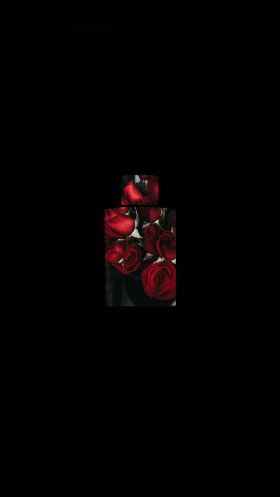

01
Análisis y estrategia
Diagnóstico inicial de tus cuentas, tu público y tu competencia. Definimos objetivos, tono de voz y pilares de contenido.
Soy Aldana Escudero, Licenciada en Comunicación Social. Diseño estrategias, produzco contenido y gestiono comunidades para que cada marca suene como ella misma.

Me especializo en crear estrategias de contenido, gestionar comunidades y producir piezas que reflejen la identidad de cada marca.
Hace más de 2 años trabajo en redes sociales, acompañando a marcas de distintos rubros de Argentina y del exterior a comunicarse, conectar con su comunidad y transformar sus redes en una herramienta para crecer. Hoy trabajo de manera freelance y también en la agencia Che Marketingg. Siempre busco aprender herramientas nuevas y animarme a proyectos distintos, porque en este trabajo lo más importante es seguir creciendo y encontrar la mejor forma de conectar con las personas.
Un servicio integral: desde entender a tu marca hasta medir qué funciona y ajustar. Me ocupo de tus redes para que vos te ocupes de tu negocio.
Diagnóstico inicial de tus cuentas, tu público y tu competencia. Definimos objetivos, tono de voz y pilares de contenido.
Calendario mensual de publicaciones, organizado por formato y objetivo.
Grabación, edición y publicación de reels, videos e imágenes.
Textos y copys alineados con la identidad de tu marca, en español y en inglés.
Gestión de la comunidad y de la interacción con tu público.
Seguimiento de alcance e interacción, informes claros y ajustes de estrategia para mejorar resultados mes a mes.
Más de 14 marcas de Argentina y del exterior. Estos son algunos de los proyectos en los que trabajé.
Un corralón con más de 25 años de trayectoria cuya comunicación se basaba en fotos de producto, sin una estrategia definida. Llevé la cuenta a una comunicación más cercana y dinámica: planificando, grabando y editando reels y stories que le dan una voz humana a la marca.
El objetivo fue crear una comunidad donde cada persona se sienta segura y orgullosa de su estilo. Cada video buscó mostrar lo increíble que pueden verse y sentirse con la ropa, reforzando el mensaje de inclusión y empoderamiento de la marca.
Un restaurante que fusiona la cocina kosher con una propuesta moderna y sofisticada. Desde las redes trabajamos para ampliar su alcance, mostrando que Azumare es un lugar ideal para todo público.
Un restaurante familiar reconocido por su auténtica comida peruana. Desarrollé contenido para transmitir su identidad, mostrando sus platos, su historia y el lado familiar del restaurante.
Una empresa especializada en la fabricación e instalación de piscinas. Desarrollamos una comunicación visual y textual coherente con su identidad, enfocada en conectar con la audiencia, transmitir confianza y destacar sus piscinas con una estética cuidada y hooks iniciales atractivos.
Un emprendimiento familiar de velas artesanales. Trabajé en la construcción de su presencia en Instagram casi desde sus inicios, con una comunicación delicada, cálida y acogedora que transmite el lado artesanal y familiar de la marca.
Una cuenta de recetas dinámicas, fáciles y pensadas para el día a día. Acompañé a Juli en la edición de historias y videos, pero principalmente en la creación de ideas y estrategias para fortalecer el vínculo con su comunidad.
Un proyecto que crea experiencias para nómades digitales que quieren trabajar mientras recorren el país. Desarrollé contenido para comunicar estas experiencias de forma cercana e inspiradora.
Lina Nails, marcas de indumentaria, autos y más. Cada proyecto me permitió aprender, crecer y seguir disfrutando de lo que más me gusta.
Charlamos sobre tu marca, tus objetivos y tu público. Reviso tus redes actuales.
Armo una propuesta con pilares de contenido, tono y formatos para cada red.
Planifico el calendario, produzco, redacto y publico. Vos aprobás antes de salir.
Analizo los resultados cada mes y ajustamos lo que haga falta para crecer.
Contame qué necesitás y te respondo con una propuesta a medida.